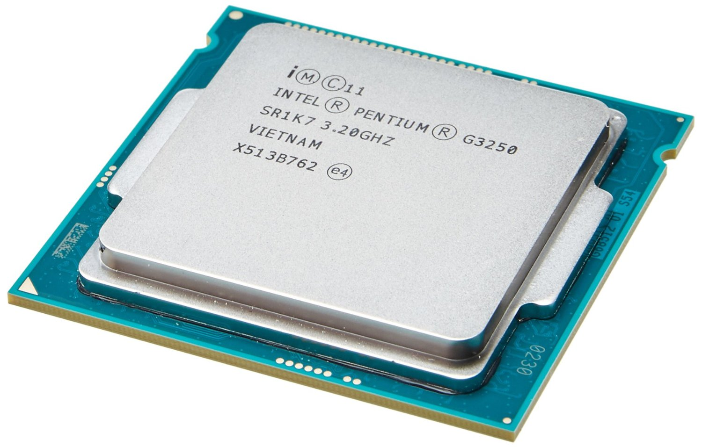
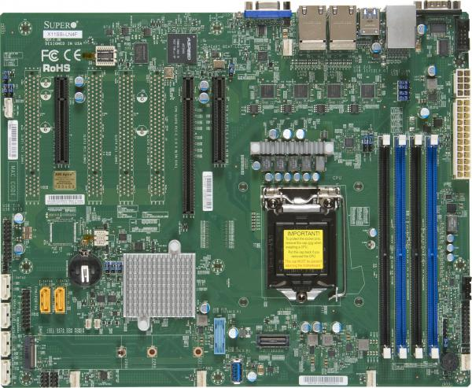

Welcome everyone! Before we start, have you ever wanted to know what a computer is and how it works? Well, if you do, you have come to the right place! Our group, Luca, Harshil, Nima and Jack have taken apart and put together a computer! We will be teaching you the main parts of the computer while providing pictures of our process.
Let us start off with the CPU. The CPU is the short form for Central Processing Unit. Below is how the CPU looks from our PC. We have the Intel Pentium 4th Generation. Our CPU has only 1 core while in this generation we have Intel Core i9 which has 18 cores! The CPU is the brain of the computer. It takes input in binary form, processes the information and then outputs the results to a output device.
When the CPU is processing the information, it uses a lot of energy, which then converts into heat. To deal with the heat, the CPU has a cooling fan. The CPU cooling fan is located on the top of the CPU so that the CPU can be attatched to the motherboard. As processors increase in speed, the PC is prone to overheating. To control the speed of the fan, a BIOS (basic input/output system) is used.

The motherboard is a giant circuit board with metallic parts, transistors, and condensers. It it responsible for allowing all the parts of a computer, such as the CPU, the RAM, and any expansion cards. It is arguably one of the most important components of a computer, as the computer's parts simply would not be able to communicate with each other without it.
The hard drive is responsible for all the storage done on the computer. Every time you create, save or download a file onto your computer, it is saved in a hard drive. When a computer boots for the first time, it has to format the one or more hard drives to be able to store information. The operating system of the computer is also stored on a hard drive. Operating systems can take varying amounts of space, from less than one gigabyte to over 100! However, the operating system is a necessary part of using computer. Besides the operating system and necessary system files, you can store whatever you want on your hard drive! Files, documents, games and more. They are your treasure chest of anything you want.

A CD drive is a device a computer uses to read data using binary. A CD drive is usually put inside a computer's body with an slot for the disc tray access connected to one of the computer's
ports. The first CD drives read data at just 150 kilobytes per second. This became known as "1X." By the 2000s, "52X" CD drives could transfer data at up to 7.8 megabytes per second.
The power supply is what is says in the name. It provides the power to run the PC. When you connect your PC to the wall, the wall outlet is a high-voltage AC. However, computers use low-voltage
DC. All the components need DC power to run. Any power supply come in 2 types: linear and switching. A computer uses switching power supplies. The switching power supply: converts AC to DC, provide
DC voltage to the components and provide cooling and maintains air flow through the case.

The RAM, or random access memory is a very important component of the computer. It acts as storage for programs that the computer needs to use right at that moment. When a computer needs to perform a task, it loads all necessary files into the RAM. Having more RAM gives your computer the ability to handle more tasks at once. RAM speed is also important, as it can improve your computer’s overall speed.

The case is arguably one of the most important components. Without it, your computer would be just a mess of parts and wires! Having a case is important to put all the pieces in the right spot, and help you manage your cables. It also makes it a lot easier to replace a part if it gets broken or you wish to upgrade.

When a computer has to perform a task, it first loads in all necessary information into the RAM, or random access memory. It then uses the CPU to process information, and to generate an output. It then sends data to the monitor, so it can be used by the user. Of course, there are always extra steps for running certain programs, such as the possible need for a graphical expansion card for running certain games, or a disk drive for running programs off of disks. You also need the motherboard and PCIE cables to connect all the parts to each other. There is also a possibility that you may need more storage space, as you may run out if you install too much software. A computer can only understand 1s and 0s, or binary. It is the language in which the computer computes and executes.